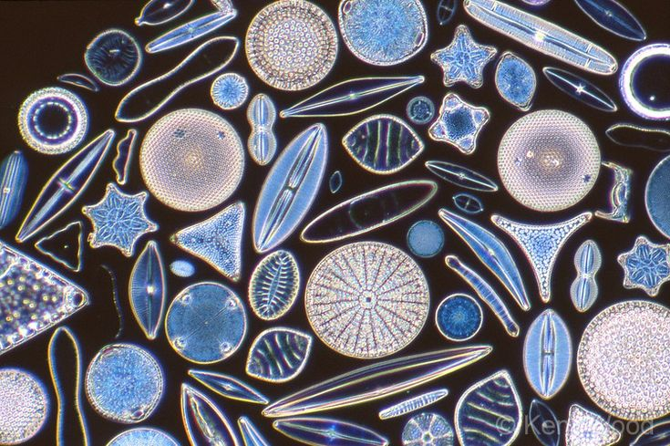

Отдел диатомовые водоросли (Bacillariophyta) включает около 5000
видов. Диатомовые водоросли, или диатомеи, — самая распространенная на
Земле группа водорослей. Диатомеи обитают в соленых и пресных
водоемах, на поверхности снега и в горячих гейзерах (при температуре
около 85°С), во влажных почвах, на скалах и коре деревьев. Они создают
около 1/2 биомассы Мирового океана, 2/3 кислорода, производимого
Мировым океаном, и около 1/4 всего органического вещества на Земле.
Набор фотосинтетических пигментов у диатомей — тот же, что и у бурых
водорослей. Характерная окраска представителей этого отдела, которая может
варьировать от золотисто-желтой до бурой, обусловлена вспомогательными
пигментами ксантофиллами (ксантином и диатомином) и другими каротиноидами.
Слоевище (таллом) Диатомовые водоросли — очень мелкие одноклеточные
организмы (от 4 до 1000 мкм); иногда они образуют небольшие колонии.
Целлюлозной оболочки, характерной для клеток растений, у диатомовых
водорослей нет. Цитоплазму отделяет от внешней среды только гибкая
клеточная мембрана. Живут диатомеи в маленьких изящных коробочках
(панцирях). Материал коробочек — аморфная окись кремния, ближе всего по
составу и строению к полудрагоценному камню опалу. Стенки коробочек
пронизаны дырочками (порами), поверхность которых составляет от 10 до 75%
от общей поверхности панциря. Панцири диатомеи украшены выступами и могут
иметь сложную, причудливую форму, что придает им сходство с ювелирными
украшениями.

Значение диатомовых водорослей
Диатомеи — основной корм многих морских и пресноводных животных, которых
привлекает запасное вещество диатомей жидкое масло с запахом рыбьего жира.
(Правильнее было бы сказать, что рыбий жир имеет запах масла диатомовых
водорослей.) Мелкие ракообразные разгрызают опаловые коробочки диатомей, а
рыбы (шпроты, сардина, сельдь, иваси, хамса, треска) глотают их целиком.
Ими, в свою очередь, питаются хищные рыбы, тюлени, китообразные, морские
птицы, и у всех этих животных жир приобретает специфический запах рыбьего
жира. Масло диатомей, так же как и рыбий жир, богато витаминами А и D.
Кремниевые панцири диатомей опускаются на дно, образуя диатомовые илы. Из
них формируются горные породы — диатомиты. Диатомит (трепел, инфузорная
земля) применяется в пищевой и химической промышленности в качестве
наполнителя для фильтров, в строительстве — в качестве тепло- и
звукоизоляции, в литейном деле. Диатомиты могут использоваться и как
полировочный материал. Пропитывая диатомит нитроглицерином, получают
взрывчатое вещество — динамит. Диатомовые водоросли, играющие
исключительно важную роль в современных экосистемах, появились на Земле
сравнительно недавно — в юрском периоде мезозойской эры, всего 195- 200
млн лет т.н., а современные виды — только в меловом периоде, около 100 млн
лет т.н., практически одновременно с появлением на Земле первых
планцентарных млекопитающих.